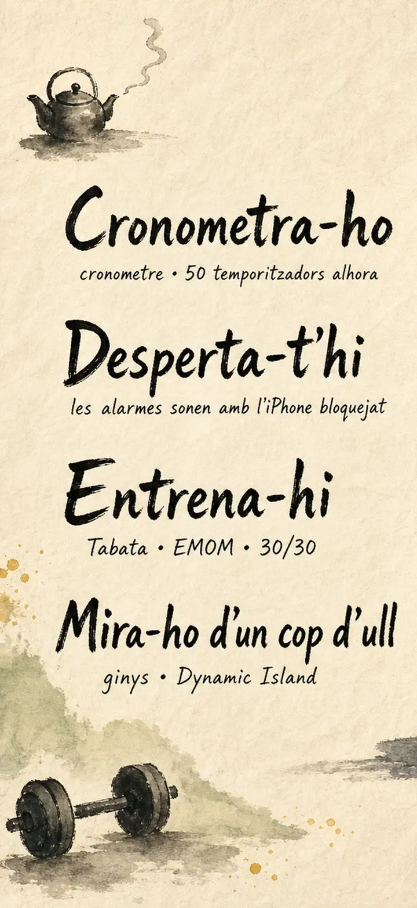
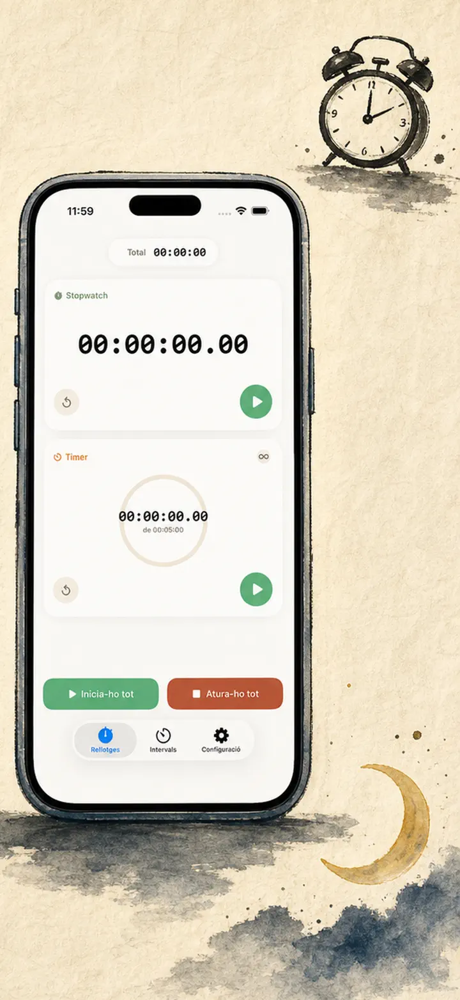
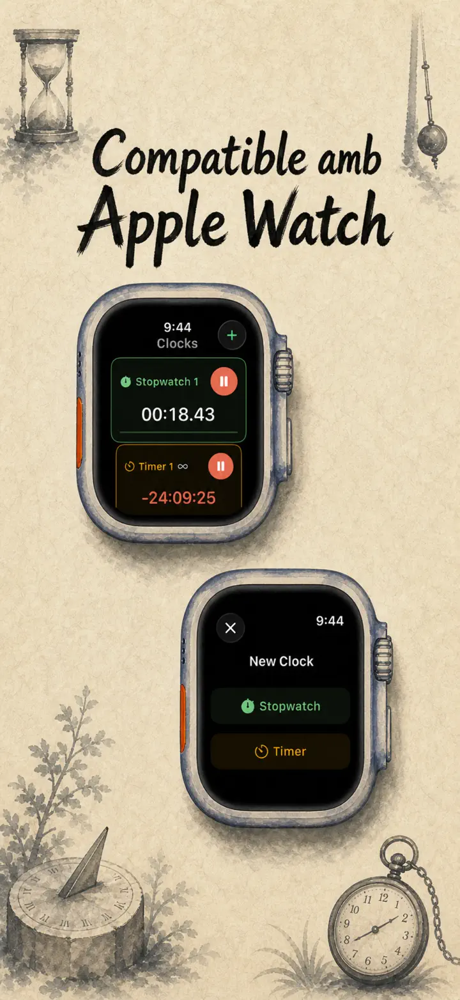
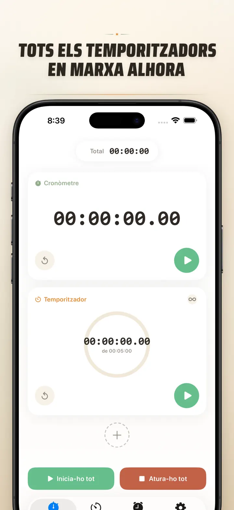
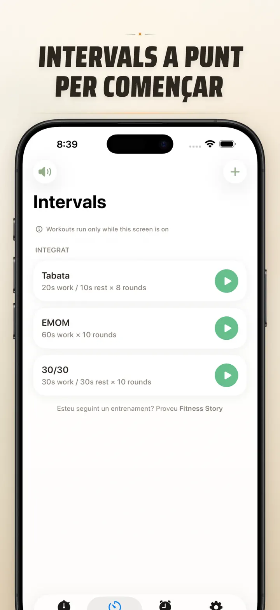
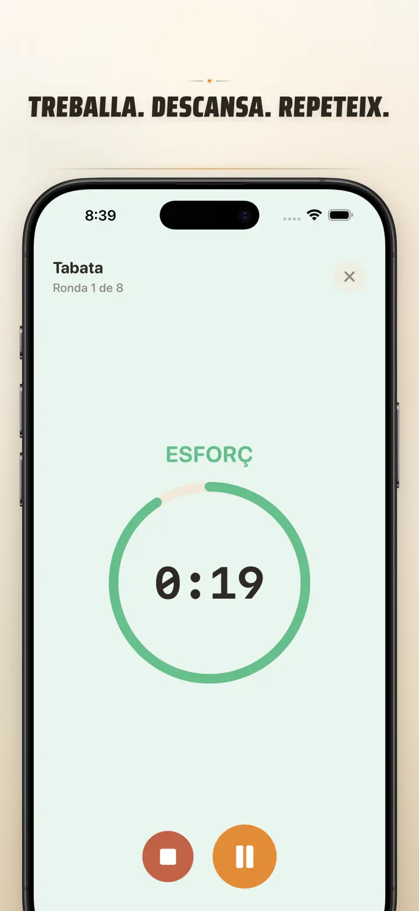
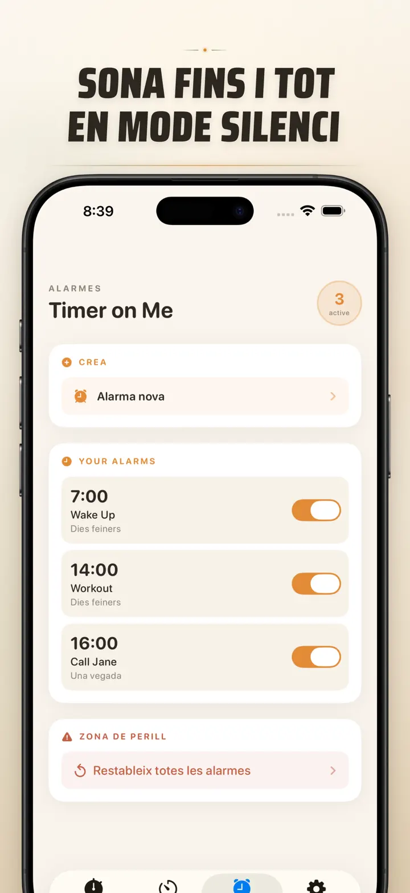

Timer on Me
Timer, Alarma, Cronòmetre HIIT
Ara amb alarmes amb data: programa una alarma única per a qualsevol data i hora, amb alarmes recurrents, 50 temporitzadors, HIIT & Tabata i Apple Watch.
Descarrega a l’App Store
Sobre l’app
Timer on Me és el teu multi-temporitzador i cronòmetre per a iPhone, iPad i Apple Watch. Fins a 50 temporitzadors independents alhora, entrenaments d'intervals precisos i alarmes que sonen de debò — fins i tot amb l'iPhone bloquejat o l'app tancada.
ALARMES
- Despertadors i recordatoris amb etiquetes personalitzades i programació per dies de la setmana
- Amb tecnologia AlarmKit — sonen fins i tot amb l'iPhone bloquejat o Timer on Me tancada
- Snooze configurable (3 / 5 / 9 / 15 / 30 minuts) o sense snooze
- Tria entre els sons integrats o importa els teus propis
- Activa/desactiva amb un toc des de la pestanya Alarmes
ENTRENAMENT I INTERVALS
- Preconfiguracions Tabata, EMOM i 30/30 ja fetes — dos tocs i ja comences
- Editor propi d'intervals: feina, descans i rondes en minuts i segons
- Mode d'entrenament a pantalla completa amb canvi de color per fase i opció silenciosa
- Pausa, omet i reprèn enmig de la sessió sense perdre el progrés
APPLE WATCH
- App nativa real de watchOS, no un simple reflex del telèfon
- Diversos cronòmetres i temporitzadors al canell alhora
- Cronòmetre amb precisió de centèsimes de segon
- Complicacions pròpies d'esfera per arrencar amb un toc
- Funciona tota sola, fins i tot sense l'iPhone a la vora
50 TEMPORITZADORS ALHORA
- Fins a 50 temporitzadors i cronòmetres independents en una sessió
- Engega, atura i reinicia individualment o per grups
- Repetició automàtica per a rondes cícliques
- Els temporitzadors continuen passat el zero per comptar el temps extra
- Barres de progrés amb color: groc al 50 %, vermell al 10 %
- Arrossega per ordenar, posa'ls el nom que vulguis
AVISOS DE CONFIANÇA
- AlarmKit: les alarmes sonen fins i tot amb l'iPhone bloquejat o l'app tancada
- Dynamic Island i Live Activity — el progrés d'un cop d'ull
- Widgets per a la pantalla d'inici: petit, mitjà i gran
- Sons integrats: campanes, cant d'ocells, telèfons antics
- Toca per escoltar abans de triar
- Mode «Mantén la pantalla encesa» per a sessions llargues
PERSONALITZA I COMPARTEIX
- Mostra o amaga decimals, totals i percentatges
- Desa i sobreescriu configuracions, recupera-les amb un toc
- Exporta com a CSV, JSON o text pla
- Comparteix amb companys, alumnes o entrenador
PER A iPhone, iPad I APPLE WATCH
- Disposició adaptable a qualsevol mida de pantalla
- Split View a l'iPad
- 34 idiomes
IDEAL PER A
- HIIT, Tabata, CrossFit i entrenament en circuit
- Rondes de boxa, kickboxing i arts marcials
- Pomodoro, selectivitat i estudi concentrat
- Cafè de màquina, ous passats per aigua, paella, crema catalana i temps al forn
- Ioga, pilates, meditació i respiració
- Assajos de presentacions i pràctica d'instruments
- Classes, tallers i activitats en grup
- Jocs de taula i trobades amb amics
Baixa't Timer on Me i pren el control de cada minut — al gimnàs, a la feina o a casa.
Política de privacitat: https://masawata.net/privacy-policy.html Condicions del servei: https://www.apple.com/legal/internet-services/itunes/dev/stdeula/
Captures de pantalla






Timer on Me
Ara amb alarmes amb data: programa una alarma única per a qualsevol data i hora, amb alarmes recurrents, 50 temporitzadors, HIIT & Tabata i Apple Watch.
Descarrega a l’App Store